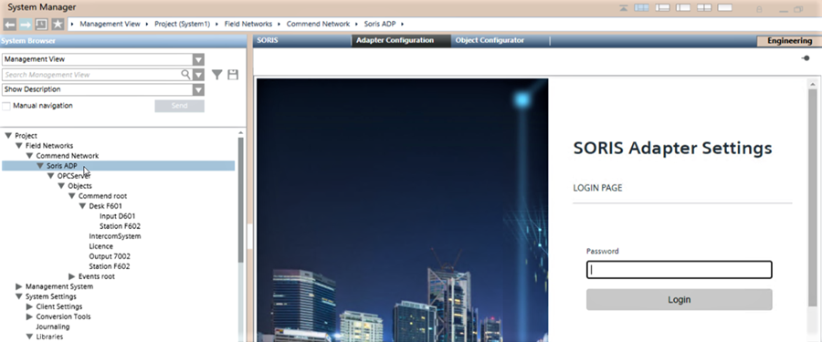
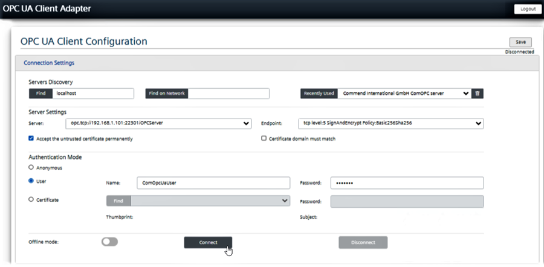
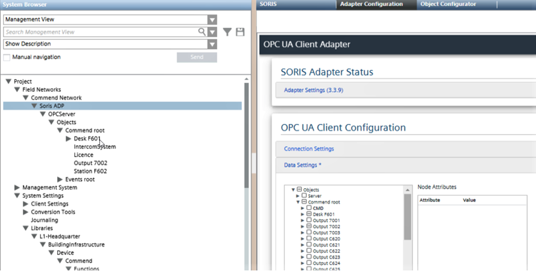
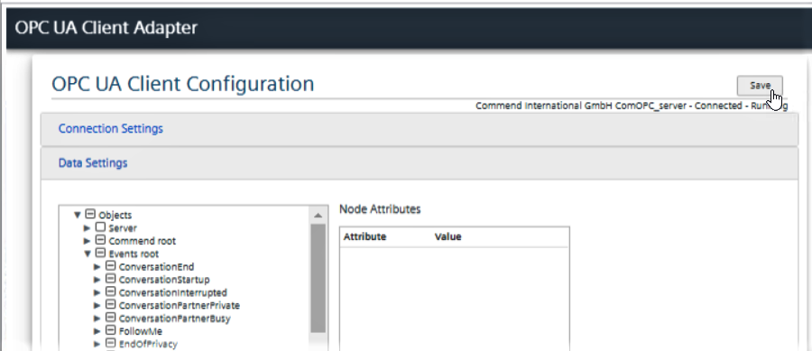
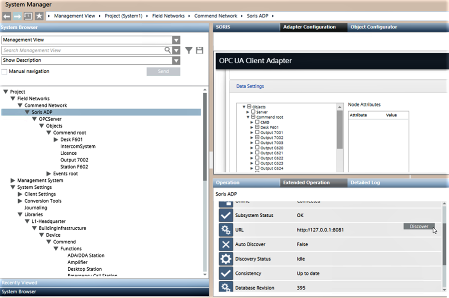
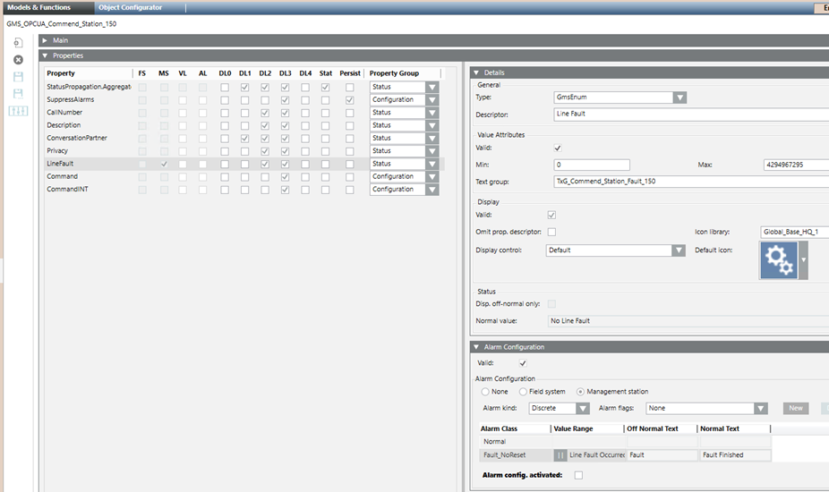

Commend Intercom
This section provides a guideline for configuring the Commend OPC system in Desigo CC via the OPC UA Adapter.
- For background information, see the Commend integration reference section.
- For detailed instructions about Customized Object Models, see "Setting a Custom Object Model for Data Aggregation".
- The Commend extension is installed and included in the active project. The following extensions are also selected automatically:
- SORIS
- OPC UA Client
- Install and start the OPC UA Client Adapter as discussed in "Installing and Starting the OPC UA Client Adapter".
- Configure the communication network. You can use the Network Wizard (recommended) or do it manually.
Refer to "Configuring OPC UA Client Using the Network Wizard"
or "Configuring OPC UA Client Manually". - Configure the OPC objects.
NOTE: For more detailed instructions, see "Performing OPC UA Client Adapter Online Configuration".
From the Commend Adapter node, in the Adapter Configuration tab, do the following:
- Login into the SORIS Adapter Settings page and expand OPC UA Client Configuration.
- In Connection Settings, connect to the Commend OPC Server.
NOTE: If the Server setting does not show automatically or after selecting it from Recently Used, enter the proper server URL in Server and select Save.
- In Data Settings, in the Commend_root structure, select the OPC Objects to import.
- In the Events_root structure, select the Events to handle.
- Select Save.
- In the Contextual pane, in Extended Operation, select Discover to import the selected items.
- In a few moments, the selected objects and events display in System Browser under the OPC server node.
The system is ready to operate.
- (Optional) You can use the MS Alarms preset configuration found in the Object Model.
You can enable it at the Object Model level, by doing so the configuration will be applied to all nodes of the same type. Or you can enable it at the instance level, this way the configuration will be applied only for that single node.
In either case, do the following: - Select the individual configuration and, in the Models & Functions panel, under Properties, select the right property. To know which one, see Commend Events reference table.
- Under Alarm Configuration, select the Valid check box and then Alarm config. activated.
- Select Save.

NOTE 1: For instructions about how to apply the Customized Object Models provided in the Commend library, see "Setting a Custom Object Model for Data Aggregation".
NOTE 2: In case of connection problems, see the troubleshooting section.